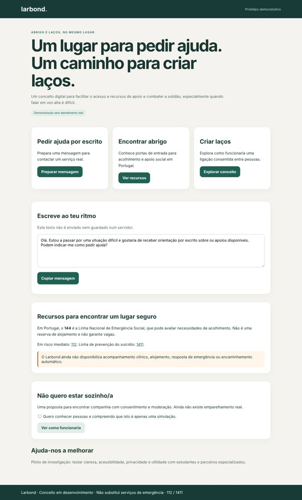
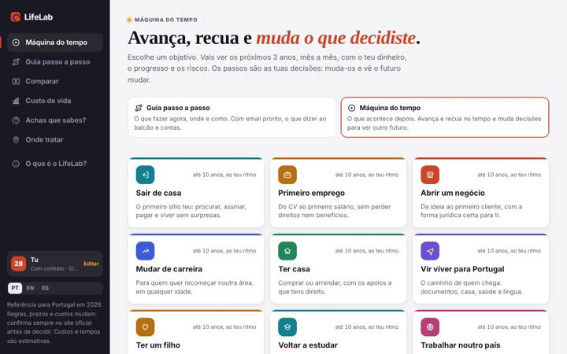
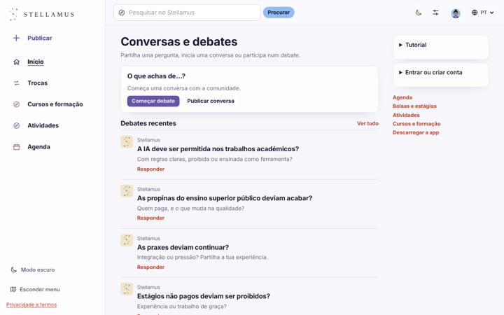

LarBond
A place to ask for help in writing, find entry points to shelter and social support and, in the future, build connections with consent.
HTMLCSSJavaScriptAccessibility
I have a degree in Biology, study Psychology and create digital projects. I turn questions into experiences you can explore.
From community to life decisions. Each project has its own audience, purpose and stated stage of development.

A place to ask for help in writing, find entry points to shelter and social support and, in the future, build connections with consent.

A time machine for life decisions: see the months ahead before you decide, and get a step-by-step guide with emails, checklists and calculators.

Share your skills, discover activities and clubs, and compare study paths in a community in development.
I'm starting to offer independent website design services. We agree on the scope, timeline and revisions before work begins.
A page to introduce your project or business, showcase your services and make it easy to get in touch.
Schedules, practical information and registration links, brought together in one clear experience.
Review an existing page's structure and navigation to make information easier to find.
A fictional workshop page created to explore a visual identity. It is not a client project.
My path began in Biology and continued in Psychology. Today, I also explore how digital tools can help people understand choices, find opportunities and take part.
I enjoy organising complex information into something people can try. These are my own projects at different stages, with room for questions, testing and change.
Understand who needs it and why.
Build something people can test.
Listen and rethink what isn't working.
Stellamus, LifeLab and LarBond have published demos. LifeLab, LarBond and ConduzPT are prototypes, with their limitations described on their own pages. SENSORA Social is in research and is not presented as a validated solution.
Yes. Explore LifeLab and tell me what you were trying to do, where you struggled and what you expected to happen. Use a fictional profile if you prefer. My contact details are at the bottom of the page.
Send me your goal, audience and any content you already have. We then agree on the scope, visual direction, timeline, price and revisions. This website does not take automatic payments.
Yes. They are initiatives by Aisha Ismail, each with a different purpose and identity. This portfolio brings the work together and states each project's status.
For a website, a collaboration or a chance to test a project, tell me what you have in mind.
Write a message